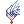
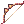
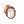
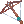
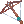
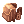
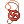
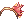
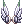

Fortunity Ranger PVM Guide
| This guide has not been updated in a while. | ||
|---|---|---|
| Information on this page may be obsolete and outdated. Please refer to the author for information on future updates. Reason: This Guide has not been updated since October 2016 |
||
| Ranger | ||||||||||||||||
|---|---|---|---|---|---|---|---|---|---|---|---|---|---|---|---|---|
| Job Base | Archer -> Hunter-> Sniper | |||||||||||||||
| Job Change | Main Office | |||||||||||||||
| Created By: | Akeno Yuki | |||||||||||||||
| ||||||||||||||||
Overview
Welcome to my Ranger Guide on Nova RO
About myself: I've been playing on Renewal as a Ranger for a quite long time, but every RO is different on how you will gearing and here's what I know about Ranger: Ranger is a 3rd class job, from novice -> archer -> hunter -> high novice -> high archer -> sniper -> ranger. Ranger known for having a high DPS as well as wide range of skill for every kind of environment. What will be covered here is about PVM Ranger (Auto-Warg + Arrow Storm and Aimed Bolt build)
.
Why Ranger?
Ranger is really popular classes on Nova RO, there is just so much good point on the Ranger Class, Here is some of it:
- Ranger is a suggested class for a new player since the build for low-mid game that is not very expensive
- Still a Beginner? Need Zeny? With Ranger you can go farming as soon as you like with simple build (Will be explained below)
- Good DPS from the start
- Cheap gear? no problem! still great damage by using only white wing set :)
- Element friendly because the wide-range selection of Element Arrow
- You can buy arrow from NPC at Payon and Prontera for a low price
- Long ranged attack with both AOE and Single-Target damage capabilities through these skills:
- Auto Warg (Hit-lock, Single Target)
- Arrow Storm (Great Damage, AOE)
- Aimed Bolt (Great DPS if combined with Bragi, Single Target)
- Multiple Trap skill for ensnaring, freezing, burning, etc. your enemy
- Has a cool warg mount for if you need a fast movement; higher the level, faster the movement
- Hit-Lock most enemy with auto-warg build
- Hit-lock means that enemy won't able to approaching you
- On most normal monster, they will die first before even come close to you
- Even so, the damage is still good
- Have Camouflage skill (undetectable by enemies except Boss/Demon/Insect monster).
- The skill is permanent until you use skill or attacking enemy
- If you use skill that requires casting, the charge will finish first before your camouflage skill canceled.
.
Stats
- DEX is the most important stat for Ranger. It increase ATK as well HIT so that your attack not miss and attack. Ranger should have at least 120 DEX for PVM.
- AGI is the most important stat after DEX for Ranger, Ranger relies on high ASPD on it's build whether it's Auto Warg or aimed bolt. AGI also add flee so that ranger can evade some attack it receives. Ranger should have at least 100-120 AGI to reach max 193 ASPD with proper equipment and arch bishop's buff or using food that increase stats.
- VIT is the essential stat for every class. It increases Max HP and Defense to decrease incoming damage, as well as resistance against Stun. Ranger should have at least 100 VIT for stun immunity
- LUK is important stat for an Auto Warg build ranger, it increase the proc chance of Auto Warg strike skill when attacking. LUK also increase perfect dodge and critical rate. Ranger should have at least 90-100 LUK if using Auto Warg build. Pure Aimed Bolt build using only 1 Luk.
- INT is an important stat which add ups our maximum SP, seeing that Ranger have relatively low SP and their skill is consuming a lot of SP. Ranger with Aimed Bolt status should have at least 50 INT for PVM.
- STR is not important to Ranger, because our attack mainly depends on DEX Stats. You can increase STR if you want to add more weight or just use Gym Pass for increasing weight limit up to +2000
.
Skills
I will put the important skill you must get, the rest of the point is up to you where to spent it
1st Job (Archer / High Archer):
| Skill | Level | Type | Description |
|---|---|---|---|
| 10 | Passive | At level 10 it will give you Dex +10 | |
| 10 | Passive | At level 10 it will give you Range +10 Cell | |
| 10 | Buff | At level 10 it will give you Boost of Agi And Dex by 12% | |
| 10 | Active / Offensive | This skill is important at the beginning since you will use this skill until you get Arrow Storm when changing job to Ranger | |
| 1 | Active | For making Arrow from item/equip
Guide on making Arrow: Click Here |
2nd Job (Hunter / Sniper):
| Skill | Level | Type | Description |
|---|---|---|---|
| True Sight | 10 | Buff | At level 10 it will give you HIT +30, Weapon Damage +20%, Crit +10 also add all stats+ |
| Wind Walk | 10 | Buff | At level 10 it will increase your Movement Speed by 20% |
| Beastbane | 10 | Passive | At level 10 it will give you ATK +40 to Brute and Insect monster |
| Ankle-Snare | 5 | Active | Ensnaring Enemy so they didn't move, and you can use Aimed Bolt while enemy trapped to get multiple damage bonus
At level 5 the base duration of the skill is 20 second and the trap duration is 50 second Effect Duration = [Base_Effect_Duration − Target_AGI ÷ 10] second |
3rd Job (Ranger):
| Skill | Level | Type | Description |
|---|---|---|---|
| 10 | Active / Offensive | Your main skill as a Aimed Bolt build Ranger, this skill gives 1000% atk at level 10 | |
| Arrow Storm | 10 | Active / Offensive | Your main skill as a Arrow Storm build Ranger and Your secondary skill on Aimed Bolt build, this skill gives 1800% atk at level 10 and have an 11x11 Area Range |
| Fear Breeze | 10 | Buff | Giving chance of multiple attack per one attack (will consume more arrow as well) with the chance of 30% at level 10 |
| 5 | Buff | Increasing 250% Ranged Physical Damage but make your def and mdef 1 | |
| 10 | Active / Offensive | To increase your warg strike damage, have 300 atk at level 10 | |
| 10 | Active / Passive / Offensive | Your main auto-skill while attacking with the auto-warg build. have 1000% ATK + Tooth of Warg bonus at level 10 | |
| At least Level 3 | Active | Undetectable while this skill is on except by boss/demon/insect monster. Put it at level 3 so you can move while the skill is on | |
| At least Level 1 | Active | For better movement speed to just run or get away from enemies at level 3 it gives 30% movement speed | |
| At least Level 1 | Active | For ensnaring the enemy for a while, works well when combined with Aimed Bolt, the enemies will get more hit depends on it's size.
Duration: (Skill Level x 1) + (Tooth of Warg x 0.5) second |
Other Usefull Skill:
| Skill | Level | Type | Description |
|---|---|---|---|
| 1
10 5 |
Passive
Passive Offensive |
Your main skill if only you decided to go for Ranger using falcon as their pet
As far as I know only useful at Bakonawa Extermination Instance for destroying Instrument more fastly. But as a Hunter/Sniper you will have lot of spare point, so I decided to take this skill level to max in case I needed the falcon later on | |
| Sandman Trap | 5 | Active | make your enemy fall asleep, useful when facing MVP with many slave, with this trap you can put all the slave to Sleep State |
| 1 | Active | Removing Trap set by you or your enemy, put the trap item back to your inventory | |
| Any
Any |
Active | To detect if there's any trap using your falcon from far, and destroying it using spring trap skill from far | |
| Ranger Main | Any | Passive | Increasing atk and def against Brute, Plant, and Fish monster. At max level, this skill gives you +50 Atk and +50 Def against those enemies |
| Any | Active | Causing burn status to your enemies, burn damage is depends on the enemy's Max HP | |
| Any | Passive | Gives more Trap Damage, Increase your Max SP and Int too |
.
Starting Point (White Wing Suit & Elven Bow)
The first step you must do as a brand new Ranger is getting yourself an White Wing Suit and Elven Bow
Why? Currently It's the cheapest gear that will give you tremendous damage boost.
.
What will you get by Equipping White Wing Set: 
- Increase your long-range damage by 2x Refine. (Suit)
- Meaning that a plain +4 White Wing Suit will give you 8% damage boost!
- And a +10 will give you 20% damage boost
- Increase your long-range damage by 3% (Brooch)
- Agi +2 on Manteau and +2 on Boots
- By wearing all of the white wing set equipment you will get additional bonus:
- Pure 2 ASPD
- Increase long-ranged damage by 30%
- Increase Arrow Storm damage by 50%
Don't forget that White Wing Set is also Enchant-able, see here for how to enchant white wing set: Mora Enchant
For where to get the white wing set, you can look here
.
- You will get additional 50% damage boost by equiping Elven Bow and Elven Arrow together
- Note that Elven Arrow Element is Neutral
- You can buy elven arrow at Payon or Prontera NPC
- You can enchant it by using converter item or sage endow element skill
- By endowing it with different element will give more damage boost to the monster who weakness is against the element you endow
- Element-Table can be seen here: Click Here
- Note that Elven Arrow Element is Neutral
.
If you don't have enough Zeny to buy Elven Bow, you can use the  Hunter Bow first
- You can buy elven arrow at Payon or Prontera NPC
- Using hunter arrow will give you additional 50% damage boost too
.
For where to get the  Elven bow or Hunter Bow, you can look here
Elven bow or Hunter Bow, you can look here
Builds (Auto-Warg + Arrow Storm and Aimed Bolt)
1. Auto-Warg  + Arrow Storm
+ Arrow Storm
Click the Image to see the skill (in case the gif not auto-playing)
.
This is my build currently for achieving 193 aspd with not-so-much Zeny spent:
Equipment:
Head:  Ship Captain Hat[1] - This Headgear will give you 7% attack power boost and +1 Dex, for the slot card, you can put Essence of Evil STR3/AGI3 Depends on your final ASPD
Ship Captain Hat[1] - This Headgear will give you 7% attack power boost and +1 Dex, for the slot card, you can put Essence of Evil STR3/AGI3 Depends on your final ASPD
Mid:  Monocle[1] - The cheapest slotted middle headgear currently, for the slot card, you can put Essence of Evil STR3/AGI3 Depends on your final ASPD
Lower:  Gangster Scarf - Atk +5, can be created (see custom headgear quest)
Gangster Scarf - Atk +5, can be created (see custom headgear quest)
Top: White Wing Suit[Ancient Mimic] - Ancient Mimic is Important, Why? it gives you 1 agi for every 18 luk point which you will of course putting a lot for the auto-warg build
Weapon:  Elven Bow[1] - The card isn't important for achieving the aspd, but if you want to know, I'm putting white knight card on this weapon OR  Big Crossbow[1] if you still need more ASPD
Elven Bow[1] - The card isn't important for achieving the aspd, but if you want to know, I'm putting white knight card on this weapon OR  Big Crossbow[1] if you still need more ASPD
Manteau: White Wing Manteau -'Try to get AGI enchant
Shoes: White Wing Shoes[1] - Try to get AGI enchant and put Essence of Evil STR3/AGI3 Depends on your final ASPD
Accesories 1: White Wing Brooch - Try to get AGI enchant
Accesories 2:  Sound Amplifier[1] - Reducing half of your cast time, suggested card is: Phen Card / Creamy Card / Gold Scaraba Card
Sound Amplifier[1] - Reducing half of your cast time, suggested card is: Phen Card / Creamy Card / Gold Scaraba Card
Monster Hunter Set: Agile Shadow Set - Agi+5 Aspd+5%
.
Stats:
Str: 1
Agi: 100-120 (must reach 193 aspd with combination of agi and dex)
Vit: 100 or more
Int: rest of the point
Dex: 90 - 120 (must reach 193 aspd with combination of agi and dex)
Luk: 90-100
.
Strategy:
The first and most important for this build thing that you must achieve here is 193 aspd with Arch Bishop's buff. (You can also go for the food stat buff but this will cost you a lot of Zeny later on)
Arrow Storm + Auto-Warg build is best to use when you are still starting as a new ranger since aimed bolt build will cost a lot more zeny than arrow-storm build.
Arrow Storm is best for mobbing since it have a 11x11 Area attack on level 10 and 1800% ATK.
For auto-warg after you have 193 aspd and Dex about 90-120. You can put your points toward LUK stat, LUK Stats will increase your warg bite skill chances to come out
.
2. Aimed Bolt 
 Click the Image to see the skill (in case the gif not auto-playing)
Click the Image to see the skill (in case the gif not auto-playing)
.
Gear:
Head:  Ancient Gold Ornament[1] - +10% long range damage, +3 Dex, EoE Str3
Ancient Gold Ornament[1] - +10% long range damage, +3 Dex, EoE Str3
Mid: Monocle[1] - EoE Str3
Lower:  Gangster Scarf - Atk +5 OR Well-Chewed Pencil - Dex +2, Hit +3%
Gangster Scarf - Atk +5 OR Well-Chewed Pencil - Dex +2, Hit +3%
Top: +9 White Wing Suit[Porcellio] - Porcellio (Atk +25), Get Expert Archer Enchant
Weapon:  +15 Elven Bow[White Knight] - 50% Damage Boost. If you need element, use the sage endow element / elemental converter OR
+15 Elven Bow[White Knight] - 50% Damage Boost. If you need element, use the sage endow element / elemental converter OR  +15 Gigantic Bow if you don't want to be dependent on converter
+15 Gigantic Bow if you don't want to be dependent on converter
Manteau:  +9 Heroic Backpack[Menblatt] - Menblatt Card will give you bonus 1% range damage every 10 point of Dex
Shoes:  +6 Temporal Dex Boots[Green Ferus] - Fixed Cast -0.5, Ranged Attack +5%. Get Expert Archer 4 and Hawk Eye for the Enchant
+6 Temporal Dex Boots[Green Ferus] - Fixed Cast -0.5, Ranged Attack +5%. Get Expert Archer 4 and Hawk Eye for the Enchant
Accesories 1:  Pendant of Maelstrom[Gold Scaraba] - Atk +6% Matk +6%
Accesories 2: Pendant of Maelstrom[Gold Scaraba] - Atk +6% Matk +6% OR  Sound Amplifier[Gold Scaraba] if you haven't achieving the instant cast yet
Sound Amplifier[Gold Scaraba] if you haven't achieving the instant cast yet
Monster Hunter Set: Cunning Shadow Set - Dex+5 Cast Time -5%
.
Stats:
Str: 1
Agi: 100-120. must reach at least 190 aspd
Vit: 100 or more
Int: 50 or more + rest of the point
Dex: 120 or more
Luk: 1
.
Strategy:
Aimed Bolt is a skill that you use for fast killing single monster (mostly for MVP's) when you have a bard's Bragi song with you
This is the important part you must have before deciding to go for this build:
 Temporal Dex Boots - MUST have, this boots will reduce your fixed cast time by 0.5 when you have 120 dex or more
Temporal Dex Boots - MUST have, this boots will reduce your fixed cast time by 0.5 when you have 120 dex or more Bragi - Obvious reason, with bragi your damage will be so high because of it's spam-able Aimed Bolt
Bragi - Obvious reason, with bragi your damage will be so high because of it's spam-able Aimed Bolt- Achieving Instant Cast (Pure Stat to Achieve it: (DEX*2+INT) = 530) with arch bishop's buff or food item
- Achieving 190-193 ASPD with arch bishop's buffs or food item
- Having more SP will help too (Having a dedicated sorcerer friend that always using soul-change when sp is low is nice here)
The best strategy to use Aimed Bolt is have another class tanking the MVP's and having bard singing bragi, aspd also improve the skill spam speed, that's why you need at least 190 aspd for decent spamming
.
Farming
Okay...We're done with the build. But what if we just want to make Ranger for Zeny Farming?
Here is what you need for farming efficiently (Arrow Strom & Auto-Warg)
.
Gear:
Head:  Ship Captain Hat[1] - 7% attack power boost and +1 Dex, EoE Str3
Ship Captain Hat[1] - 7% attack power boost and +1 Dex, EoE Str3
Mid: Monocle[1] - EoE Str3
Lower:  Spare Card - 50% Chance of Getting Blank Card -> Trade it to Old Card Album -> more zeny
Spare Card - 50% Chance of Getting Blank Card -> Trade it to Old Card Album -> more zeny
Top: White Wing Suit[Porcellio] - For the atk +25, if you farm on monster that gives freeze status, use Marc card instead
Weapon: Thanatos Bow[Hunter Fly] - Thanatos Bow will give you literally non-ending SP if you farm with Arrow Storm on large mob, Hunter Fly will greatly help your HP by giving 15% of your attack to HP
Manteau: 'White Wing Manteau
Shoes: White Wing Shoes [Green Ferus] - Additional HP is great
Accesories 1: White Wing Brooch
Accesories 2:  Sound Amplifier[1] - Reducing half of your cast time use Phen or Creamy Card (Or phen card and one clip[1] with Creamy Card)
Sound Amplifier[1] - Reducing half of your cast time use Phen or Creamy Card (Or phen card and one clip[1] with Creamy Card)
.
Status:
It's really depend on what you want actually, longer farming = put more str, faster killing = put more dex
Str: 1-100, depends on what weight you want
Agi: 80-100
Vit: 100
Int: 1
Dex: 90-100++, if you feel need more damage, add more dex
Luk: 90-100
Put Int on 0, you don't need sp with Thanatos Bow
.
Suggested Farming place:
- Juperos 01: Kill everything, Loot everything, Sell using merchant overcharge level 10 (I usually put 100 or more str while farming here)
- Geffenia any level
.
Gear List you can use on Ranger
Head
| Item | Obtain From | Description | Notes |
|---|---|---|---|
| Cash Shop | Ranged Attack +7%, Dex +1, Max HP +100 | Good Gear to start (Price usually about 20-25m Zeny) | |
| Cash Shop | Agi +2, Aspd +10%, Can change to Moonlight (Range Damage +5%, Critical 100%) | Chance to become moonlight is high from my Experience, good Agi boost and good when facing monster with high flee | |
| Biolab Gear Exchange | All Stats +2, Dex +3, Long ranged physical damage +10% | The most end-game gear for now on ranger I think | |
| Cash Shop / Custom Headgear Quest | 5% chance to recover 8% of your damage as HP
1% chance to recover 4% of your damage as SP |
Good for use when farming on to boost Thanatos Bow and Hunter Fly Card | |
|  Autumn Headband [1] | Cash Shop | Increases Fire Trap and Ice Trap damage by +50%.
Reduces Arrow Storm damage by -50%. If upgraded to +7 or higher, adds +5 ATK for every 5 base INT. If upgraded to +9 or higher, Increases Fire Trap and Ice Trap damage by additional +25% |
Good for Arrow Storm-ing if upgraded to +9 |
| Atk +10 | Use this if you don't have EoE Str3 yet |
.
Middle
| Item | Obtain From | Description | Notes |
|---|---|---|---|
| Monocle[1] | Owl Marquess / Owl Viscount / Time Holder at Nightmare Clock Tower | Slotted | Cheap Slotted Middle Headgear to put card or EoE |
| Cash Shop | Atk +2%, Matk +2%, Dex +1 | The atk meaning here is the output damage atk, not the status atk | |
|  Sigrun's Wing | Cash Shop | Ranged Attack +2% | Cool-Looking middle headgear, and nice boost of 2% Ranged attack |
| Tao Gunka | Dex +1 | ||
| Atk +10 | Use this if you don't have EoE Str3 yet |
.
Lower
| Item | Obtain From | Description | Notes |
|---|---|---|---|
| Cash Shop / Custom Headgear Quest | Atk +5 | Cheap Lower Gear that gives atk boost | |
| Cash Shop | Dex +2, Hit +3% | Nice Lower Gear for adding hit, I prefer this over gangster scarf sometimes | |
| Cash Shop | Atk +5 | Basically the same as Gangster Scarf, but can only be obtained at cash shop... I guess because of the looks? | |
| Cash Shop | Autocast Bolts | Autocast various bolts while physically attacking. Good gear to increase DPS | |
| Cash Shop | 50% Chance getting Blank Card | Good to use while farming, Blank card can be traded with various item including OCA on Main Office |
.
Weapon
| Item | Obtain From | Description | Notes |
|---|---|---|---|
| Hunter Bow | Buy From Npc | Increases long-ranged damage on targets by 50% when equiped with Hunter Arrow | Before you have elven bow, use this |
| Gargoyle | Increases long-ranged damage on targets by 50% when equiped with Elven Arrow, Dex +1 | All-around good bow till end-game | |
| Big Crossbow[2] | Cecil Damon | If Base AGI is 120, adds 1 ASPD. | Pure 1 aspd, and 2 slot
This bow also increase Arrow Storm damage depending on the refine level |
| Grand Pere | Ranged Physical Attack Strength +40%.
- Decreases Attack Speed (+15% post-attack delay). |
Even with ASPD Decrease, this weapon have more brute strength than other bow when using with element arrow, best use for aimed bolt build | |
| Celia | Has a chance of activating Fiber Lock while attacking. | Fiber Lock still need cobweb to activate, with this monster will not even move an inch
This bow is not for damaging but more for strategy. One example is where you mvp'ing with party. you lock your enemy in place with fiber lock and having another character kills the monster | |
| Thanatos Bow[1] | Ghost Palace | INT +6. VIT +6. LUK -6.
low chance of regaining HP and SP from 5% of your damage dealt |
Best to use while farming zeny or when low on sp / hp
Great to put Hunter Fly Card on |
.
Armor
| Item | Obtain From | Description | Notes |
|---|---|---|---|
| White Wing Suits[1] | Anubis | Increases ranged attack damage by 2x refine level.
- Increases Aspd by 2, Increases damage of Arrow Storm by 50%. - Increases ranged attack damage by 30% |
Best Armor for Ranger, even without the set it still give ranged damage 2x refine level
Can be enchanted at Mora Enchants The best enchant you can get is Expert Archer, but you must have at least +9 White wing suit to get the EA Enchanment |
| Atk +25 Def -5 | Best to use if you want to have more damage | ||
| Every 18 Base Luk will give you +1 Agi | Use this only when you really need more aspd, else, marc or porcellio is better | ||
| Immunity to Freezing | |||
| Immunity to Freezing, Armor element become undead | Be careful when using this, you cannot be healed or revived, use marc if you don't need the undead element amor |
.
Manteau
| Item | Obtain From | Description | Notes |
|---|---|---|---|
| White Wing Manteau | Mora Village | AGI + 2, FLEE + 10, | Can be enchanted at Mora Enchants
Best enchant would be Figthing spirit (you need to make it +9 first) and AGI enchant |
| Heroic Backpack [1] | Loyalty Shop | Base Stat 90
Refine +7: - Str -> Attack +20 - Int -> Magic Attack +30 - Vit -> Tolerance to Neutral Property +5 - Agi -> Aspd +8% - Dex -> Ranged Attack +5 - Luk -> Inflict 10% more critical attack. Refine +9: - Str -> Attack +30 - Int -> Magic Attack +50 - Vit -> Tolerance to Neutral Property +10 - Agi -> Aspd +8% & Aspd +1 - Dex -> Ranged Attack +10 - Luk -> Inflict 15% more critical attack. |
Best Manteau before FAW come here, the pure aspd+1 and ranged atk boost is very nice |
| Every 10 Base Dex gives you +1% Long-Range Damage | Best card to put on Heroic Backpack for Aimed Bolt build |
.
Shoes
| Item | Obtain From | Description | Notes |
|---|---|---|---|
| White Wing Boots[1] | Mora Village | AGI + 2. | Can be enchanted at Mora Enchants
Best enchant would be Sharp (you must make it +9 first) and AGI or DEX enchant |
| Old Glast Heim | Every 3 Refine: DEX + 3
If Base Dex more than 120, fixed casting - 0.5 sec, long distance attack power + 5%. |
Best shoes for Aimed Bolt Build because of the -0.5sec reduce cast
and it's enchant-able at Old Glast Heim Best enchant for temporal dex boots is Expert Archer 4 and Hawk Eye special enchant | |
| Vit +1 Max HP +10% | Additional HP and gives vit+1 | ||
| Agi +1 Max HP +10% | Additional HP and Agi if you need more aspd |
.
Accesories
| Item | Obtain From | Description | Notes |
|---|---|---|---|
| White Wing Brooch | AcidusMora Village | DEX + 2, Ranged Attack Damage +3% | Can be enchanted at Mora Enchants
Best enchant would be AGI or DEX enchant |
| Creamy Fear | Reduces Variable Casting time by 50% | Good for reducing cast time on aimed bolt, with 150 int bragi the cast become instant | |
| Pendant of Maelstrom[1] | Nightmarish Jitterburg | ATK +6%, MATK +6%. All stats +1. Magic attacks from enemies cast Level 1 Auto Spell Maelstrom |
Best accesories for aimed bolt build |
| Bow Thimble [1] | GargoyleSocket Enchanting for [1] | Long Range Attack +3% | |
| Geffen Magic Tournament | - ATK +5%
- Increases Attack Speed 5% when equipped with Anti-magic Suit. - Decrease after skill delay by 5% when equipped with Geffen Magic Robe. - 5% Demi-Human resistance. |
||
| Atk +25 | Best card to gives more damage on accesories | ||
| Cast Time +25%, un-interuptable cast | Make your cast un-interuptable, best to use while farming | ||
| Enable to use level 1 Teleport | Fly WIng is cheap, but with this card you will have more weight |
.
Essence of Evil
| Item | Place | Description | Notes |
|---|---|---|---|
| Essence of Evil Dex3 | Any Place | Dex +4, Hit +8, Luk -4 | Give more damage and hit |
| Any Place | Str +4, Atk +12, Int -4 | Give more damage (I think greater than EoE dex since it have atk+) | |
| Any Place | Agi +4, Flee +8, Vit -4 | Give more agi if you need aspd, but be careful since it will reduce your vit by 4 |
.
Leveling
Leveling an Ranger is really easy (you can even solo gramps quest if you want)
.
- Level 1 - Job Change
- Do Izlude Quest
 With registering to Criatura Academy only you will reach job level 10. After registering, take the Red Herb Quest on the left room of academy
With registering to Criatura Academy only you will reach job level 10. After registering, take the Red Herb Quest on the left room of academy - Get the Red Herb from outside but don't submit the Red Herb Quest back to the npc yet
- Alternative would be hunting at poring at outside of south prontera or ant egg at anthell till you have job level 10
- Do Izlude Quest
- Job Change - Level 26
- Job change to archer
- Submit the Red Herb Quest (Alternative would be hunting at ant egg until you get the Double-strafe skill)
- Raise your Double-Strafe skill
- Hunt on payon level 1 with silver arrow until level 26 (You can buy arrow at payon / @go 3). Use double-strafe skill
- Lv26 - Level 50
- Do 1st Eden Quest on payon to get the eden gear I
- Hunt on orc dungeon 01 till Level 50 with silver arrow and double-strafe skill
- Level 50 - Level 70
- Take the eden quest on orc dungeon
- Finish the quest, get the eden gear II
- Go back hunt on Glast Heim St.Abbey till level 70
- Level 70 - Level 85
- Take the st abbey eden quest
- Finish the quest, get the eden gear III
- Hunt till 85 at st abbey
- Level 85 - Level 99
- At this point you might want to change to Hunter bow instead of Eden Bow.
- While you hunt at the gramps collect all the loot and sell it to npc, don't let the item . Usually you can get about 40-100k zeny per full gramps run
- Gramps Quest till you level Base 99, Job 70
- Don't submit the quest back yet
- Take the malaya quest
- Don't submit the quest back yet
- Rebirth to High Novice
- At this point you might want to change to Hunter bow instead of Eden Bow.
- Rebirth
- Buy a knife or dagger weapon from weapon merchant npc
- Put 10 dex and rest str
- Kill one Ant Egg on Ant Hell dungeon (this should make your job level 10)
- Change job 1st High Archer
- Submit the Malaya Quest (this should make your base level about 70 and job level 50)
- Change job 2nd Sniper
- Submit the Gramps Quest (this should make your base level 99 and job level 70)
- Change job 3rd Ranger
- Rebirth (Alternative)
- This is an alternative if you accidentally submitting the gramps quest or not taking the malaya quest
- Buy a knife or dagger weapon from weapon merchant npc
- Put 10 dex and rest str
- Kill one Ant Egg on Ant Hell dungeon (this should make your job level 10)
- Change job 1st High Archer
- Kill ant egg to get double strafe skill
- Hunt on payon level 1 until you level 30 with double strafe and silver arrow
- Hunt on orc dungeon level 1 until you level 50 with double strafe and silver arrow
- Hunt on glast heim st.abbey until you level 85 with double strafe and silver arrow
- Do Gramps quest until you level 99 job 70
- 99-115
- Do Gramps Quest until you level (Base 115)
- Alternative:
- Take 100-110 Eden Board Quest
- Hunt Kobolds and Desert Wolves
- Take 111-120 Eden Board Quest,
- Hunt Venatu.
- Best way to hunt here is to always ready to use camouflage when things looks dangerous and Arrow Storm the venatu's mob.
- Put phen card if you're not instant-cast the Arrow Storm yet
- All the loot dropped from venatus can be sold for some nice zeny, so make sure to always @autoloot 100 here
- If you can already one hit the enemy here using Arrow Storm, you can start farming zeny here
- You might want to start to build your gear here, try to get the White Wing Set and Elven Bow first
- Hunt Venatu.
- Take 100-110 Eden Board Quest
- 115-145
- Do Gramps Quest until you level (Base 145)
- Alternative:
- Take 121 - 130 Eden Board Quest
- Hunt Vanberk, Isilla, and Hodremlin.
- Take 131 - 140 Eden Board Quest
- Hunt One-horn and Two-horn Scarabas.
- Use Fire Arrow or Fire Elemental Converter since scarabas are weak to fire
- Take 121 - 130 Eden Board Quest
- 145-170
- Do Gramps Quest until you level (Base 175 job 70)
- Take 145 - 170 Eden Board Quest
- Hunt Angra Mantis, Pom Spiders, and Little Fatum
- Hunt Menblatt for the card since this card will be used on your end-game gear
- Take 145 - 170 Eden Board Quest
- Do Gramps Quest until you level (Base 175 job 70)